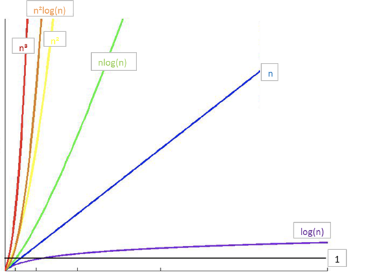

常见时间复杂度
学习目标:
- 熟悉 常见时间复杂度
- 掌握 常见时间复杂度消耗时间的排序
| 执行次数函数举例 | 阶 | 非正式术语 |
|---|---|---|
| 12 | O(1) | 常数阶 |
| 2n+3 | O(n) | 线性阶 |
| 3n2+2n+1 | O(n2) | 平方阶 |
| 5log2n+20 | O(logn) | 对数阶 |
| 2n+3nlog2n+19 | O(nlogn) | nlogn阶 |
| 6n3+2n2+3n+4 | O(n3) | 立方阶 |
| 2n | O(2n) | 指数阶 |
注意，经常将log2n（以2为底的对数）简写成logn
常见时间复杂度之间的关系

所消耗的时间从小到大
O(1) < O(logn) < O(n) < O(nlogn) < O(n2) < O(n3) < O(2n) < O(n!) < O(nn)
小结:
- 熟悉 常见时间复杂度
- 掌握 常见时间复杂度消耗时间的排序